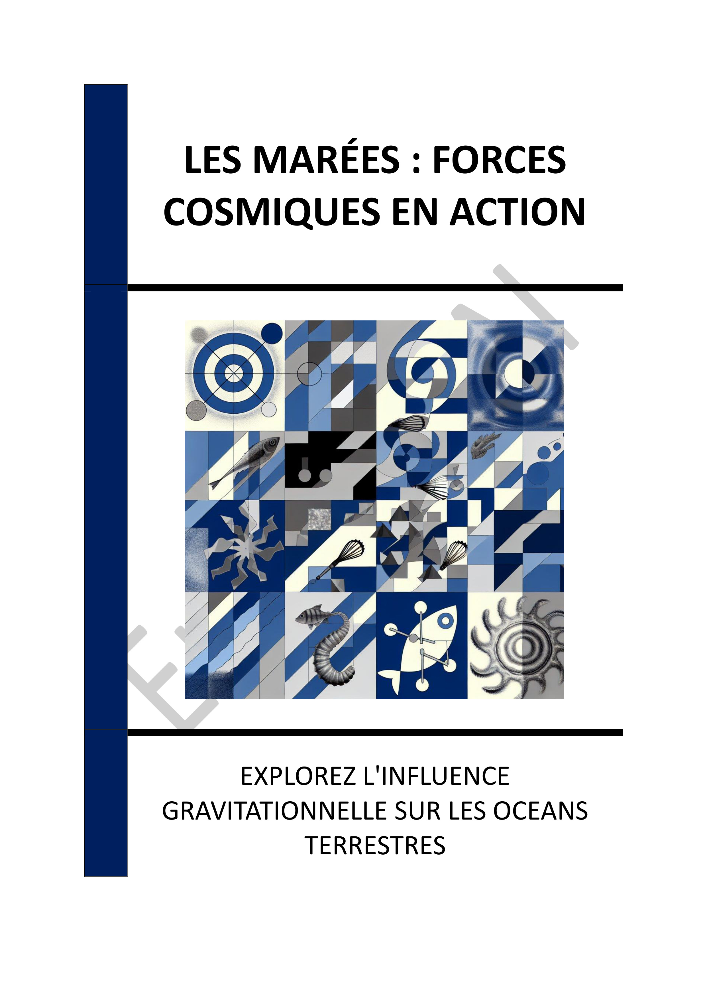

▶
Vitesse
++
+
=
-
--
INTRODUCTION - LES MYSTÈRES DES MARÉES : UNE EXPLORATION COSMIQUE
Chapitre 1 - INTRODUCTION AUX MARÉES ET À LEUR ORIGINE COSMIQUE
1.1 - Les bases des marées
1.2 - L'histoire de la compréhension des marées
1.3 - Les cycles de marée
Chapitre 2 - INFLUENCE GRAVITATIONNELLE DE LA LUNE SUR LES MARÉES
2.1 - La gravité lunaire et ses effets
2.2 - Les marées lunaires
2.3 - L'influence des phases lunaires
Chapitre 3 - RÔLE DU SOLEIL DANS LA MODULATION DES MARÉES
3.1 - L'effet gravitationnel solaire
3.2 - Les marées combinées Soleil-Lune
3.3 - Les variations saisonnières des marées
Chapitre 4 - LES CATÉGORIES DE MARÉES : VIVES-EAUX ET MORTES-EAUX
4.1 - Définition des vives-eaux
4.2 - Définition des mortes-eaux
4.3 - Comparaison entre vives-eaux et mortes-eaux
Chapitre 5 - IMPACT DES MARÉES SUR LES ÉCOSYSTÈMES CÔTIERS
5.1 - Les zones intertidales
5.2 - Adaptations des espèces marines
5.3 - Rôle des marées dans la productivité marine
Chapitre 6 - IMPORTANCE HISTORIQUE DES MARÉES POUR LES SOCIÉTÉS CÔTIÈRES
6.1 - Navigation maritime et marées
6.2 - Pêche et marées
6.3 - Infrastructure côtière et marées
Chapitre 7 - LES DÉFIS CONTEMPORAINS DE LA MONTÉE DES MERS ET DES MARÉES
7.1 - Impact du changement climatique sur les marées
7.2 - Gestion des risques côtiers
7.3 - Préservation des écosystèmes face aux marées changeantes
Chapitre 8 - ÉNERGIE MARÉMOTRICE : UNE OPPORTUNITÉ RENOUVELABLE
8.1 - Principe de l'énergie marémotrice
8.2 - Avantages et défis de l'énergie marémotrice
8.3 - Perspectives futures de l'énergie marémotrice
CONCLUSION - LES MARÉES : UN REFLET DES FORCES COSMIQUES ET TERRESTRES
📄 Consulter les annexes du livre
Mentions légales